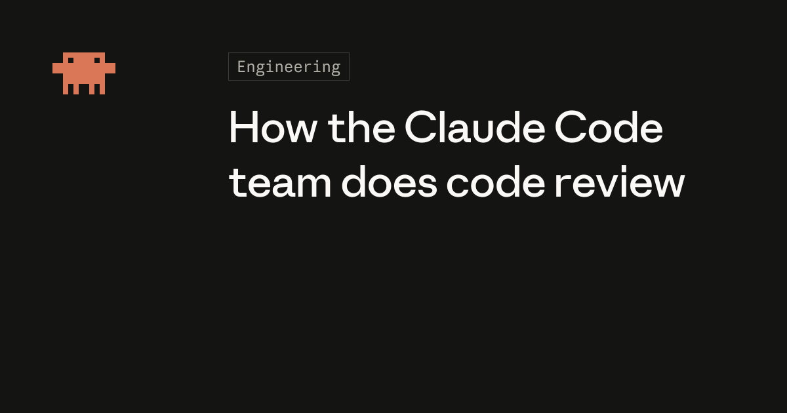
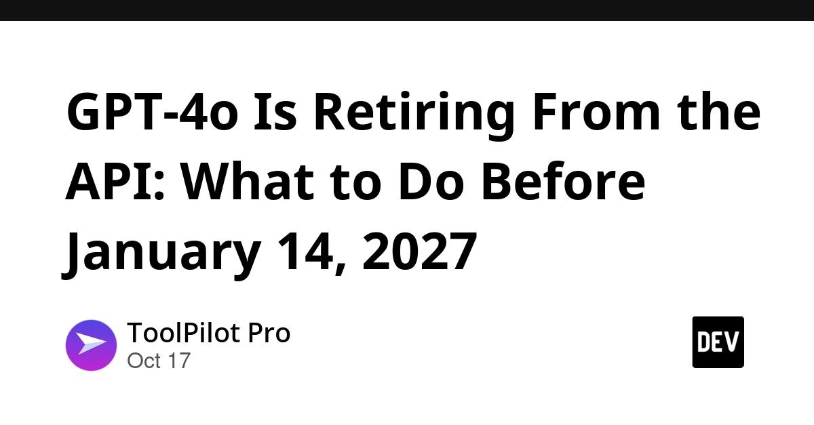
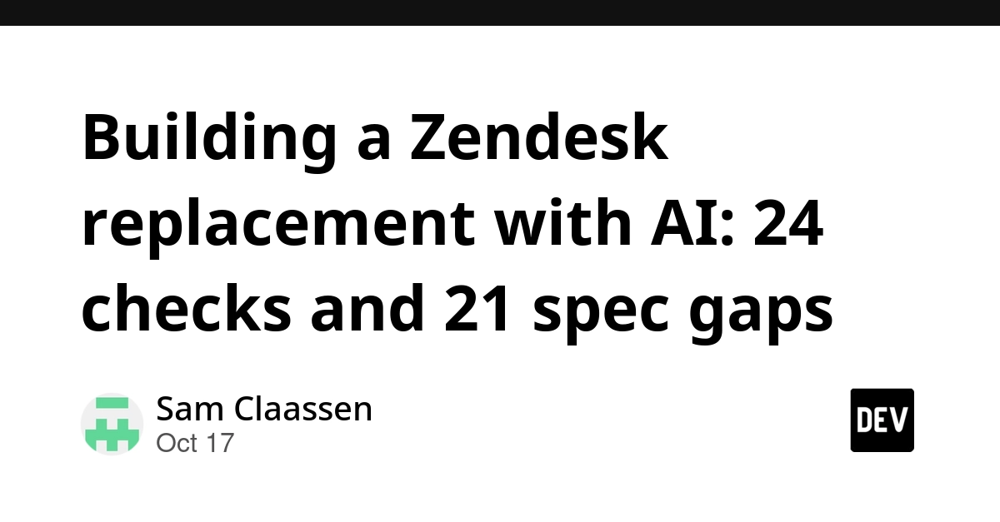
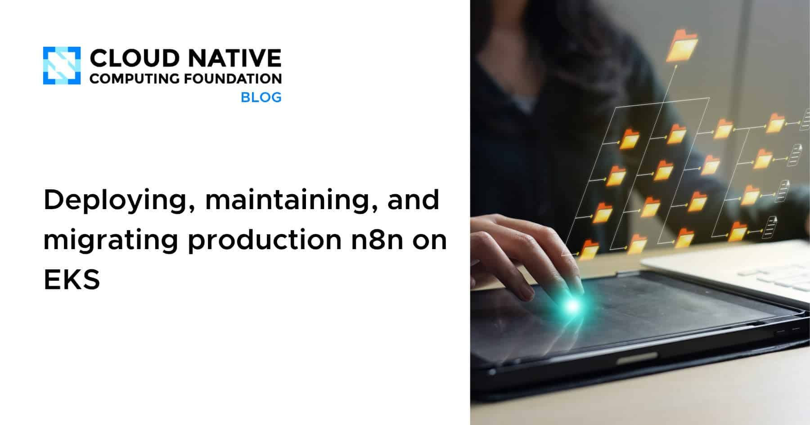
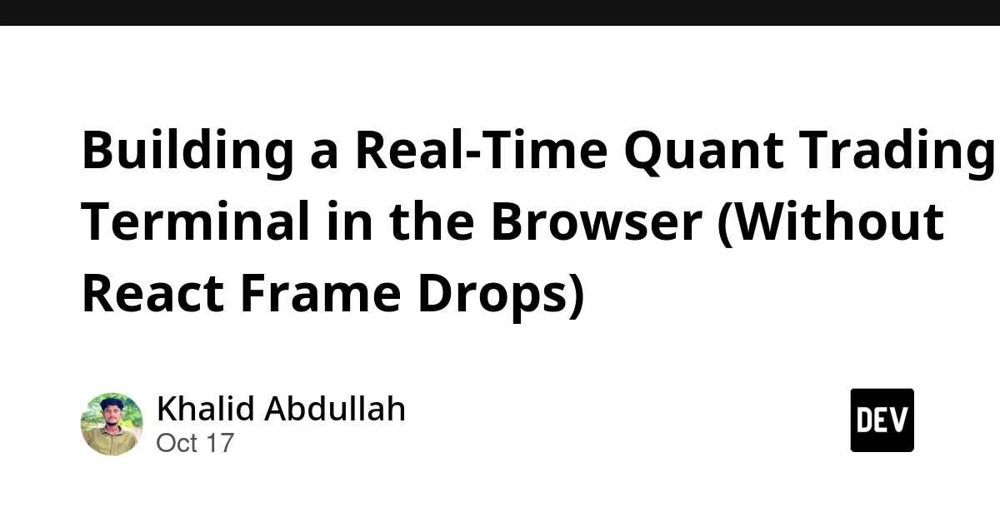
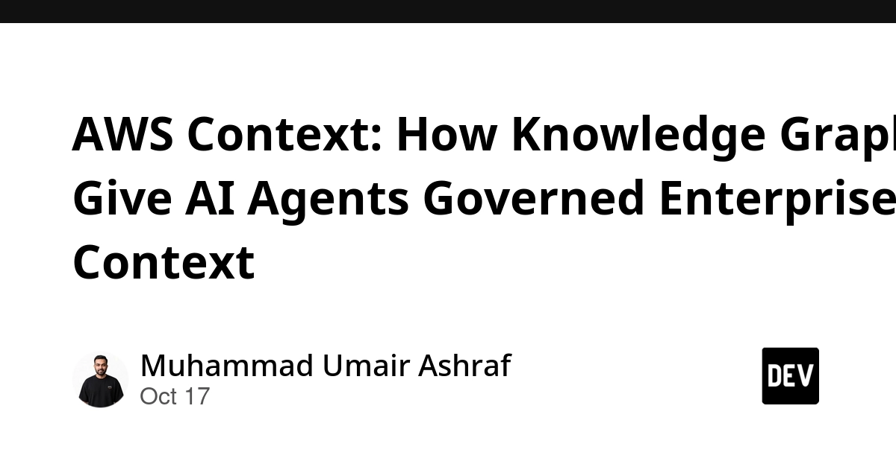
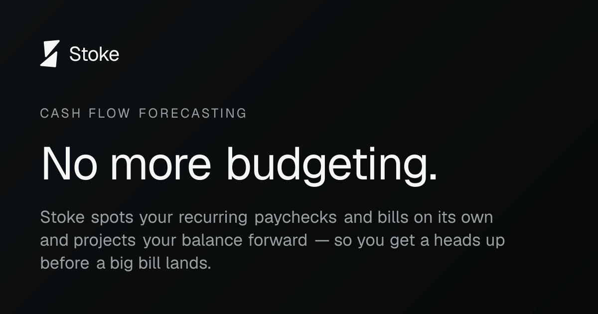
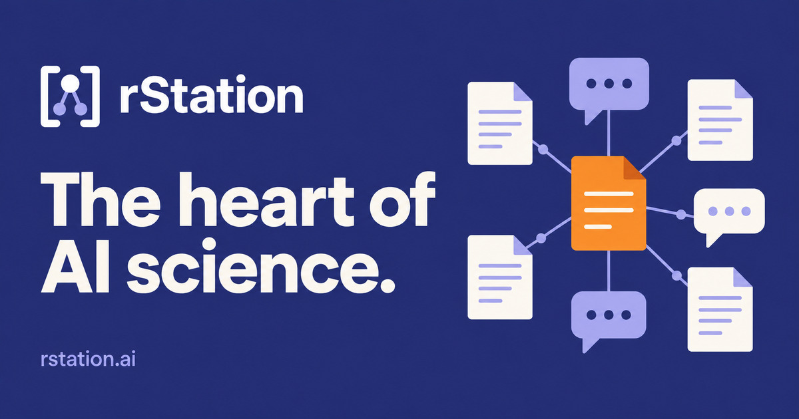

🔥 Top 3 (must read)
How the Claude Code team does code review
The Claude Code team says "did a human read the code?" is not the right question. The better question is "what could go wrong with this change, and which check, automated or human, should catch it?" Review also moved from a gate at the end (open a PR, wait for a colleague) to something that runs all the time while you write, "more like spellcheck". Simon Willison quoted it too, and the HN thread has 241 comments. Why it matters: As an EM, you can use this to rethink your team's review rules now that AI writes more of the code.

GPT-4o Is Retiring From the API: What to Do Before January 14, 2027
On October 14, 2026, OpenAI told developers that GPT-4o, GPT-4o mini, GPT-4.1 and GPT-4.1 mini will leave the API on January 14, 2027. Any code that still calls these models will break on that date. Why it matters: Search your services and scripts for these model names now, so you can plan the move inside the next 3 months.

Building a Zendesk replacement with AI: 24 checks and 21 spec gaps
A team gave Claude a help-desk blueprint and four phase prompts, in order. The final build passed 24 of 24 acceptance checks in one browser run on a fresh database, with 64 automated tests, and it handles tickets from email and a web form. The title also says they found 21 spec gaps along the way. Why it matters: It shows a concrete way to make AI builds safer. You write acceptance checks first, then let the agent build until they pass.

🛠 Tools & releases
Deploying, maintaining, and migrating production n8n on EKS
. One container with SQLite is fine for a demo. Production needs workers, webhook processors, PostgreSQL and Redis on Kubernetes. (EKS = Amazon's managed Kubernetes service.)

Building a Real-Time Quant Trading Terminal in the Browser (Without React Frame Drops)
. A WebSocket stream can send 200–500 events per second. If each one updates React state (useState), the main thread chokes. The post shows how to avoid this.

🤖 AI for developers
How the Claude Code team does code review
. Continuous, risk-based review instead of one human gate at the end (see Top 3).
GPT-4o retiring from the API on January 14, 2027
. This is a migration deadline for any product that calls OpenAI (see Top 3).
AWS Context: How Knowledge Graphs Give AI Agents Governed Enterprise Context
. It uses knowledge graphs to give AI agents company context, with "governed" (controlled) access.

👔 Engineering & teams
Anthropic Console overcharged my card 100x due to internationalization input bug
. A user reports a 100x charge that they say came from an internationalization (i18n, meaning support for different languages and number formats) bug in an input field. It has 86 points on HN. It is a good reminder to test payment inputs with different locales.
N
Building a Zendesk replacement with AI
. Acceptance checks plus phase prompts are a delivery process your team could copy.
🎯 For me
Claude Code team's review approach
Code review + AI (EM): the speaks directly to how your team adopts AI.
Zendesk build
Testing: the used 24 browser acceptance checks and 64 tests as the "done" signal for an AI agent.
Building an Ethiopian Calendar in Flutter
Flutter: . It is a 100% offline app with its own small calendar engine in Dart. It converts between calendars, tracks holidays, and stores fasting days. It is a nice example of offline-first design and date logic beyond the Gregorian calendar.
high-frequency WebSocket data without frame drops
React performance: .
💡 App ideas & indie builds
Stoke Money
(HN) is a personal finance app built around a cash flow forecast. Many budget apps only show where money went. This one shows where your money is going. Inspiration: you can make a crowded category new again by putting one view (the forecast) at the center.

OneDeploy
(HN) offers managed hosting of open-source apps, with nightly backups and TLS. People want self-hosted tools without the work of running servers. Inspiration: you can sell "the boring ops part" around free software.
O
rStation
(HN) is a shared research lab for your AI agents. It is a place where several agents work on research together. Inspiration: new tools are appearing that coordinate many agents, not just one.

Gemini 4 Argon plays StarCraft
(HN) uses a real-time strategy game as a test bed for AI models. It got 192 points. Inspiration: games can be a fun, visual way to show what a model can and cannot do.

🎓 Try this
At your next team review sync, take 3 recent PRs. For each one, list "what could go wrong" and "which check should catch it" (lint, unit test, E2E, or a human). This follows the Claude Code team's code review approach. You will see where human review is really needed and where an automated check can do the job.